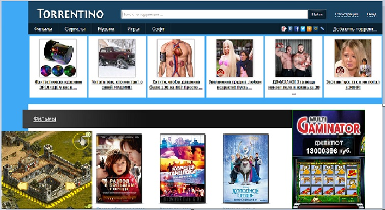
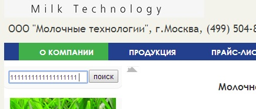

Торрент – это сервис для обмена информацией между людьми в Интернете.
Если вдаваться в подробности, то Торрент — это специальный пиринговый (P2P)
сетевой протокол, который придумал и воплотил в жизнь американский программист
Брэм Коэн.Суть задумки была такова, что передаваемый файл не загружается на сервер,
а напрямую передается от пользователя к пользователю.1.Это открый торрент трекер сайт,с которого без особых проблем "без регистрации" можно скачать понравившиеся вам файлы "музыка,фильмы,сериалы,софт,игры"
2.Первым недостатком сайта является-это огромное количество разнообразной рекламы и рекламных банеров.Сайт просто переполняю различные ссылки, всплывающие банера с музыкальным сопровождением,при попытке закрыть которые,можно сразу же попасть на сайт рекламодателя
3.Очень плохая поисковая система.Она или находит много всего ненужного в котором приходится проводить уже полный визуальный осмотр. Либо вообще ничего не выдает на отправленный запрос. Хотя в последствии посматривая содержимое сайта,можно легко найти этот файл.
4.Плохо проверенные файлы. Очень часто при попытки скачивая, можно загрузить вирус или вредоностное ПО.При запуске которого может пострадать ваш ПК.